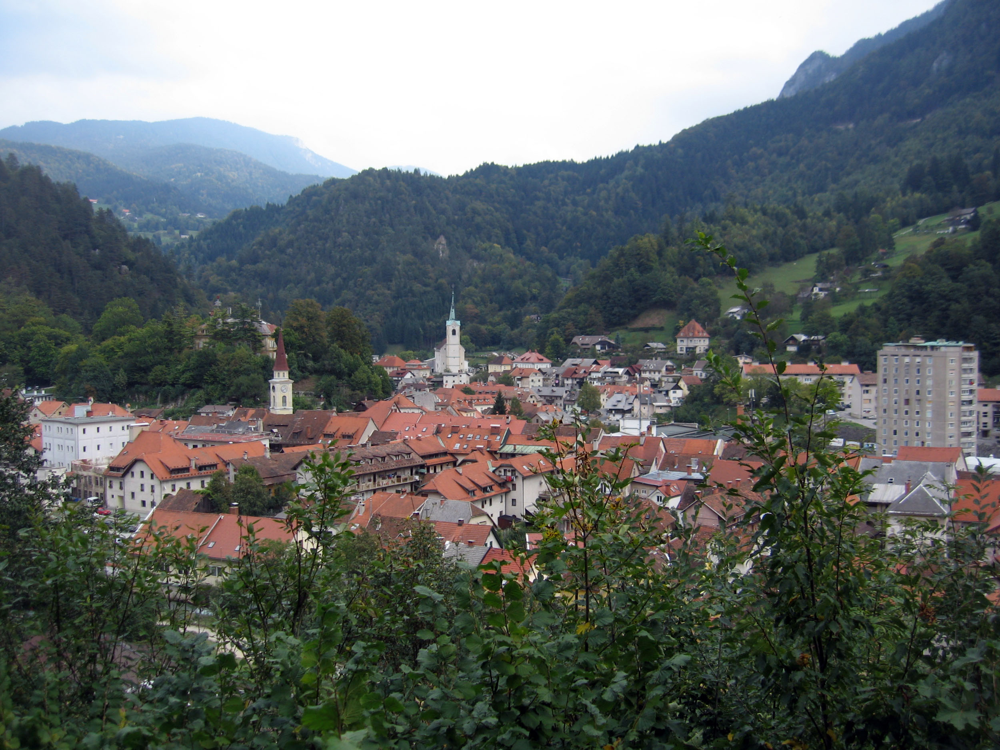

Born 30.04.2000 in Kranj, I've lived all of my life in a smaller town named Tržič, north of the country.
My family was never rich, my father worked daily to earn enough to pay the bills. My mother was supposed to stay at home and watch me. And my divorced grandmother was at the time still working in a restourant. We lived in a small appartment and life was fairly simple.
Since we were low on funds I was never that child that would go to vacations every year so I never learned things like skiing, swimming on my own, neither did I have the newest consoles that came out, my only tool was a laptop with no internet connection and my only games were downloaded by my father from his work.
Years passed and when I was 12 my parents finally got married, we got another dog since our previous dog had passed away. My interests for computers derived from my fathers work being in administration and accounting. Although he had never had any computer education he knew a lot and worked as a system administrator in a company in Kranj which meant he would leave early in the morning and come back later in the afternoon. After a while, my mother got a job started earning her own money, my fathers health condition became worse and worse, and my grandmother who still lives with us retired.
I finished primary school with straight As and continued education in IT. By the end of my highschool, my fathers condition got worse enough that his regular hospitalisations eventually resulted in his passing. That was when I had just started visiting college, Covid-19 started appearing and my life went into chaos for a year. Thankfully I had met a girl that has been there for me ever since, supporting me on my path.
After failing my first chance at college, going to a lower stage college seemed like a decent idea, since getting a degree is pretty important and any experience would help. Classes filled presentations weren't quite my cup of tea but i powered through them and as of now i only have a few months left till I graduate.
My family was never rich, my father worked daily to earn enough to pay the bills. My mother was supposed to stay at home and watch me. And my divorced grandmother was at the time still working in a restourant. We lived in a small appartment and life was fairly simple.
Since we were low on funds I was never that child that would go to vacations every year so I never learned things like skiing, swimming on my own, neither did I have the newest consoles that came out, my only tool was a laptop with no internet connection and my only games were downloaded by my father from his work.
Years passed and when I was 12 my parents finally got married, we got another dog since our previous dog had passed away. My interests for computers derived from my fathers work being in administration and accounting. Although he had never had any computer education he knew a lot and worked as a system administrator in a company in Kranj which meant he would leave early in the morning and come back later in the afternoon. After a while, my mother got a job started earning her own money, my fathers health condition became worse and worse, and my grandmother who still lives with us retired.
I finished primary school with straight As and continued education in IT. By the end of my highschool, my fathers condition got worse enough that his regular hospitalisations eventually resulted in his passing. That was when I had just started visiting college, Covid-19 started appearing and my life went into chaos for a year. Thankfully I had met a girl that has been there for me ever since, supporting me on my path.
After failing my first chance at college, going to a lower stage college seemed like a decent idea, since getting a degree is pretty important and any experience would help. Classes filled presentations weren't quite my cup of tea but i powered through them and as of now i only have a few months left till I graduate.

City Tržič

City Kranj
City Ljubljana